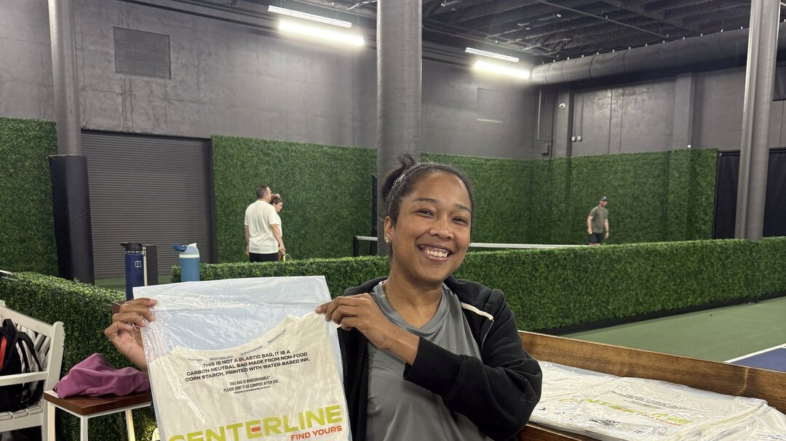

Project File 04 / Activate
Honcho × Centerline
Field activation proof
A real venue, visible sponsor material and participant context. The environment is part of the evidence.
← Back to Casting Sheet

The Proof
The room counts.
This file keeps the sponsor material and live venue context visible. The proof is field-based rather than reconstructed as a studio campaign.
Season Zero presents it as activation evidence with sponsor and participant context visible.
File Notes
Why it’s here.
The venue is retained in frame so the work reads as field proof rather than a detached product image.
Centerline sponsor material appears as a receipt from the activation environment.
Approved Centerline field images already used on Season Zero and the Casting Sheet.
End of Selected Files
Put Lauren in the room.
Return to the producer overview or send the opportunity directly.